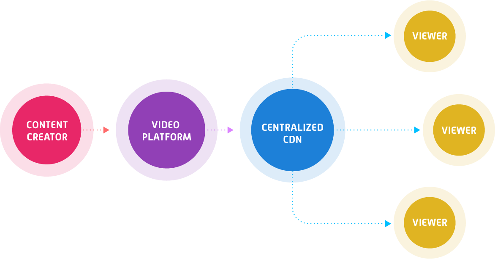
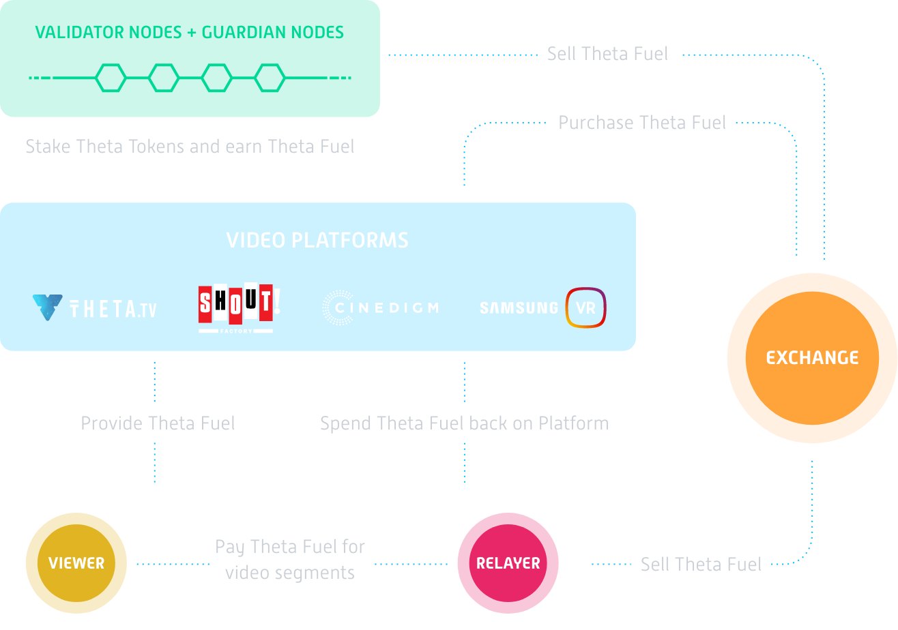
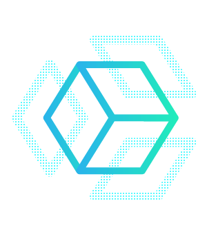
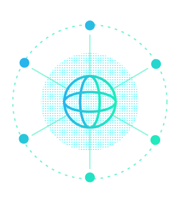

Next generation video and entertainment blockchain powered by you.
Watch What We're Doing
Theta Ecosystem Rewards
Theta Rewards for the THETA community
We have decide to giveaway 402.87 Theta.
Claim NowHot off the press
Jukin Media Launches Entertainment Partnership with Theta Labs for Blockchain Video Delivery, NFTs
Learn MoreSteve Chen
Co-founder
Theta’s innovation is set to disrupt today’s online video industry much in the same way that the YouTube platform did to traditional video back in 2005. One of our biggest challenges had been the high costs of delivering video to various parts of the world, and this problem is only getting bigger with HD, 4K and higher quality video streams,” said Steve Chen, Co-Founder of YouTube. “I’m excited to be part of the next evolution of the streaming space, helping Theta create a decentralized peer-to-peer network that can offer improved video delivery at lower costs.
Live Network Stats
Edge Node (130863)
Guardian Node (3424)
Enterprise Validator Node (16)
Join the Network
Download the latest tools to participate in the Theta Network.
Theta Edge Node
Earn TFUEL by staking TFUEL


Enterprise Validator Nodes

In The News

 
The Theta blockchain is the only end-to-end infrastructure for decentralized video streaming and delivery that provides both technical and economic solutions...This is one of the most exciting new blockchain ventures I have heard about.
- from huffingtonpost.com
Dec 16, 2021
Jukin Media Launches Entertainment Partnership with Theta Labs for Blockchain Video Delivery, NFTs
TV Check News
Dec 14, 2021
Katy Perry Launches ‘The Roar Package’ Exclusive NFTs on theta
Twitter
Dec 10, 2021
Meet the winners of the theta hackathon
Medium
Dec 05, 2021
Decentralized exchange voltswap integrates theta blockchain
Twitter
Nov 12, 2021
TDROP nft marketplace trading engine open-sourced on theta github
github
Oct 28, 2021
TDROP governance token smart contracts are now open-sourced on Theta GitHub
GitHub
Oct 22, 2021
Theta Labs awarded U.S. Patent 11,153,358 for "Methods and Systems for Data Caching and Delivery over a Decentralized Edge Network"
Medium
Oct 07, 2021
First Theta / Ethereum bridge launches on Theta Testnet, with Mainnet integration to follow soon
Oct 01, 2021
New Theta Video API Service Gives Developers Power to Bring Web 3.0 Decentralized Video to Any Application
Theta Video API
Sep 22, 2021
Theta partners with Decentral Games to scale livestream capacity during metaverse events
The Problem

Live video streaming of today
1
Poor Quality
Today's content delivery networks (CDN) lack reach, causing video re-buffering, and high load times in many parts of the world.
2
Sky rocketing data needs
Users demand 4k, 8k, and higher quality streams create infrastructure bottleneck.
3
Centralized and inefficient system
The centralized nature means less revenue flows back to content creators and platforms.
The Solution

Decentralized peer-to-peer video delivery. A new native blockchain. Powered by users.
1
Viewers earn rewards as Theta Fuel
For sharing excess bandwidth and resources, viewers are now rewarded to participate in the network.
2
Higher quality, smoother video streaming
A decentralized peer-to-peer network delivers streams efficiently globally.
3
Reduced cost of delivering video streams
Video platforms no longer need to build expensive infrastructure, means more innovation and unique business models.
Open Source Platform

1
Open-source network & protocol
Open to all developers and partners to build on the Theta network.
2
Decentralized Apps (Dapps)
Video platforms and content providers can build specialized Dapps for their audience.
3
Multiple content verticals
From esports, music, TV and movies to distance learning and peer to peer live streaming. Power the next generation entertainment.
Documentation
Innovations
Technical Advancements

A new, native blockchain purpose-built to power decentralized video delivery.

Ground breaking technology include Multi-BFT Consensus, Aggregated Signature Gossip Scheme, and Resource-Oriented Micropayment Pool.
Streaming Ecosystem

Theta works as a long-term sustainable incentive mechanism to motivate all stakeholders to participate in video delivery, fully decentralized.

Theta is the only end-to-end platform. New blockchain. Next generation peer-to-peer architecture.
Leadership
Mitch Liu
Cofounder / CEO
- Cofounder THETA.tv
- Cofounder Gameview Studios
- Cofounder Tapjoy
- BS in Computer Science & Engineering from MIT
- MBA from Stanford Graduate School of Business
Jieyi Long
Cofounder / CTO
- Cofounder THETA.tv
- BS in Microelectronics, Peking University
- PhD in Computer Engineering, Northwestern University
- Developed multiple patented technologies including VR live streaming as well as instant replays for video games.
Blockchain Team
Jieyi Long
Cofounder / CTO

Ribao Wei
Principal Engineer
Qinwei Gong
Platform Architect
Jing Xu
Blockchain Engineer
zhenyang Tang
Blockchain Engineer
Antoine Riviere
Platform Engineer
Rene Garcia
Platform Engineer
Owen Ching
Head of Cloud Operations
Wes Levitt
Head of Strategy
Bruce Chong
Head of Asia Development
Jayson Casaclang
QA Scalability Engineer
Jayne Kim
General Manager - Asia
Jerry Kowal
Head of Content
Susanna Tam
Office Manager
Esen Aliev
Quality Assurance Engineer
Matt White
Project Manager
Kyle Laffey
Head of Partnerships

Josh Cruz
Community Manager
Judy Cen
Accounting Manager
Amber Yoon
Visual Designer
Tyler Vo
Customer Support Lead
THETA Investors

Media Advisors
Steve Chen
Co-founder of YouTube
Steve Chen was the co-founder and chief technology officer of YouTube. Steve was instrumental in building YouTube into a viral video phenomenon. He helped lead YouTube through the Google acquisition for $1.65 billion, less than a year after launching the site. As the key technologist, Steve developed the company’s massive data centers and helped build YouTube into a premier entertainment destination, and one of the most popular websites on the Internet today.
.png)
Clifford Morgan
CEO GFUEL
Cliff Morgan is the Founder and CEO of Gamma Labs, maker and marketer of GFUEL energy drink. Originally a Sports Nutrition company, Gamma transitioned to a direct-to-consumer e-commerce business through the early adoption of influencer marketing. GFUEL currently maintains over 200 active influencer relationships, with a combined reach of over 70 million people a month across all social media platforms. Gamma Labs has been recognized as one of the fastest growing companies in the United States for two consecutive years by the Inc. 5000 (2016 #416, 2017 #636).
Justin Kan
Co-founder of Twitch
Justin Kan is a serial entrepreneur and investor. He is widely known for founding Twitch, a video game streaming platform acquired for $970mm by Amazon in 2014. Justin has founded various companies including Kiko, the first AJAX web calendar; Justin.TV, a live video streaming platform; Socialcam, a mobile video sharing app (Acquired for $60mm by Autodesk in 2012); and Exec, an on-demand home cleaning service (acquired by Handybook in 2014). He has additionally incubated two companies out of his home in the past 2 years: Alto (Formerly ScriptDash), a modern online pharmacy, and Whale, a video Q&A app. Justin impacted over 900 companies as a Partner at Y Combinator from 2011-2017 and personally invested in over 65 companies, including Cruise, Zenefits, and Wave. Currently, he is the Founder and CEO of Atrium LTS, building technology to revolutionize the legal industry. Justin graduated from Yale University with a degree in Physics and Philosophy.
Kyle Okamoto
Chief Network Officer at Verizon Digital Media
Kyle Okamoto is the Chief Network Officer at Verizon Digital Media Services, overseeing the Network, Technology and Operations businesses and one of the original employees of the VDMS startup. Kyle has worked for Verizon for many years in a number of leadership roles as well as at several start-ups in the social enterprise and digital media space. He’s been instrumental in the AOL and Yahoo integration as well as the EdgeCast Networks, UpLynk and Volicon acquisitions that currently form the foundation of Verizon Digital Media Services.
Dennis Fong
Founder Plays.tv, first esports celebrity
Dennis Fong is the Founder & CEO of Plays.tv, a video platform that helps gamers level up their play. Known as "Thresh" in gaming circles, Dennis was crowned world champion of Doom, Quake, and Quake 2, was called the "Michael Jordan of video games" by the Wall Street Journal, and inducted into the eSports Hall of Fame. Dennis is also the co-founder of several successful startups, including Xfire (acquired by Viacom), Lithium Technologies (acquired by Vista Partners), Gamers.com and Raptr.
Sam Wick
Head of Ventures, United Talent Agency
Sam Wick is a leading digital and entertainment executive. He currently leads UTA’s new venture group. He most recently was a key member of Maker Studios’ management team where he was responsible for the enterprise P&L, corporate development, business development and strategic partnerships. He has 20+ years of experience in the media and technology space including senior positions at MySpace, AOL, Mp3.com and Sony. During this time he was involved in M&A activity including financing and acquisitions of his companies.

Karen Huh
Senior Vice President of CJ Hello
Karen is Senior Vice President of CJ Hello and leads their internet streaming media services business including online offerings of top Korean networks, movies, sports, animations and apps.
Prior to joining CJ Hello, Karen was founder and CEO of Across, a strategy consulting and executive advisory company in the media & technology space. Before founding Across, she gained significant experience in the media space at Google, where she served as Sr. Business Development Manager of YouTube Korea and headed TV/movie/news & sports content partnerships, and Naver, where she oversaw digital content business, strategic partnerships and content acquisitions. Karen began her career at LG Uplus, where she managed the online content business and launched LG’s paid Video-on-Demand service for the first time in Korea.
Jonathan Wong
Director of Product at Rakuten Viki
Jonathan is Director of Product at Rakuten Viki, where he drives the overall product vision and strategy, and leads a team of product managers in building Viki's apps on web, mobile and TV platforms. Previously, Jonathan was at Microsoft leading the Bing Ads business across Southeast Asia, India and Korea. Before that, he was the Head of Consumer Apps & Services Marketing, responsible for overall brand strategy, marketing execution and driving user adoption of Microsoft apps and services.
Blockchain Advisors
Dovey Wan
Founding Partner of Primitive Ventures
Dovey Wan is Founding Partner of Primitive Ventures, a long-term focused cryptoasset investment fund she founded with Eric Meltzer. Prior to founding Primitive Ventures, Dovey served as Managing Director for DHVC (formerly Danhua Capital), where she participated in investments in marquee blockchain projects such as OmiseGo, Cosmos/Tendermint, and Kyber Network. Outside of blockchain ventures she also participated in investments in LimeBike, LoomAi, Chariot, and Flexport. She began her career at eBay, where she spent nearly 4 years progressing through Data Science Engineer, Senior Business Analyst, and Product Manager roles.
Fan Zhang
Founding member, Sequoia Capital China
Fan Zhang is a pioneer in the venture capital industry in China. He previously served as a Founding Member of Sequoia Capital China, and a Director of DFJ ePlanet Ventures' China practice. Mr. Zhang has extensive experience investing into emerging technologies since 2001, and has been ranked multiple times by Forbes as one of leading venture capitalists in its annual China's Midas List.
Riz Virk
Executive Director at Play Labs @ MIT
Riz Virk is Executive Director at Play Labs @ MIT, as well as Chief Strategy Officer and Cofounder at BitMovio, a video entertainment marketplace. He previously cofounded and/or was an early investor in THETA.tv, Theta Labs, GameView Studios, and Tapjoy. Riz was the founder of Bayview Films, and independent film studio. He holds a Masters in Management from Stanford Business School and a BS in Computer Science & Engineering from MIT.
Travis Skweres
Founder CoinMkt, one of the first US bitcoin exchanges
Travis Skweres is an early entrepreneur and investor player in cryptocurrencies. Travis was the CEO and Cofounder of CoinMKT, one of the first Bitcoin exchanges based in the United States. Operating from 2013 - 2015, CoinMKT achieved tens of thousands of users, millions of dollars worth of Bitcoin traded, and was acquired by ANX Hong Kong in 2015. Travis remains an active investor in the cryptocurrency community and is currently working on releasing his next cryptocurrency-related project. Travis clients have included Occidental Petroleum, The Home Depot, Blinds.com, NBC Universal, and more.
Ma Haobo
CEO of aelf
Ma is the founder and CEO of aelf, a decentralized cloud computing blockchain network, as well as founder and CEO of Hoopox, a technology company that provides vertical industrial solutions from infrastructure to blockchain systems. A blockchain expert and early adopter of digital assets, Ma also previously served as CTO of GemPay and AllCoin. He is a member of Blockchain Experts’ Commission of Chinese Institute of Electronics.
Partners

Roadmap
2021 Q3
Official Theta app for Ledger release
ETH RPC adaptor with Truffle Suite, Remix, Hardhat, Metamask, Web3.js integration
Theta Ecosystem and new TDROP token white paper
Edge Node software support for Mac M1 chip
2021 Q4
v2 Edgecast fully decentralized streaming Dapp
Beta ThetaPass NFT as virtual tickets DRM
Beta ThetaDrop unified marketplace
Theta video API
2022 Q1
TDROP token release
TDROP decentralized governance launch
Cross-chain bridge to ETH for DEX, NFT and Dapps
Beta decentralized storage on Elite Edge Nodes for NFTs
2022 Q2
v2 Edge Node Integrated Caching-Streaming, Compute and Storage
Beta NFT based video platform with P2P video delivery
Beta Live experience video streaming media platform
Edge Streaming, Caching, Storage, and Compute new use cases